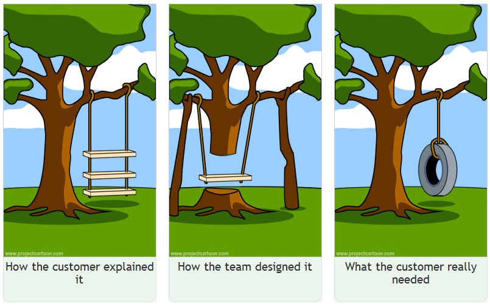

A short introduction to
DDD - CQRS - Event sourcing
Created by Manu Mouton
DDD
aka
Domain Driven Design
- Focus on the business logic
- Definition of the model via Bounded contexts
- Definition of an Ubiquitous language
- Collaboration between Business and IT teams!
Bounded contexts

Ubiquitous language
CQRS
aka
Command Query Responsibility Segregation
CQRS
- Split between WRITE & READ actions
- Commands vs Queries
- Gain of performances

Event sourcing
Event sourcing
- Every state change is captured in an event
- Current state = Sequence of events
- Ability to rebuild your data
- From a different point of view
- Timeline mode
Putting all together
- Kafka as the command / event bus
- Multiple consumers of the generated events
- JSON Api and domain language
- Open tracing / Instana

Thank you!
This presentation is available at https://manumouton.github.io/ddd_cqrs_evtsourcing/